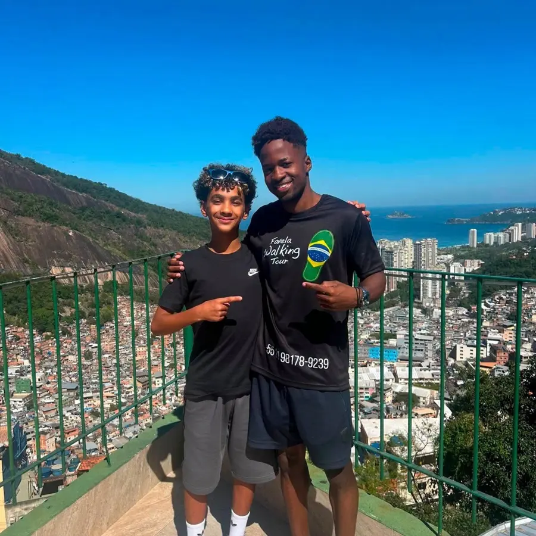

3h de caminhada Busca em Copacabana e Ipanema 6 idiomas
Rocinha Favela Walking Tour
Do alto da comunidade até a Passarela, pelos becos, escadarias e lajes, com paradas para as vistas e para as fotos. Um guia local conta a história da Rocinha enquanto vocês descem.
Saída9:30
Saída13:30
A partir deR$ 230por pessoa
- 9:3013:30Busca no Copacabana PalaceEmbarque na van.
- 9:5013:50Busca no Sol IpanemaDepois, direto para a Rocinha.
- 10:2014:20Introdução sobre a RocinhaA história e as principais características da comunidade.
- 10:4514:45Começa a caminhadaPela comunidade com o guia local, com paradas para fotos.
- 12:3016:30Fim na Passarela da RocinhaVolta de van, com chegada prevista às 13:00 ou 17:00 ao Copacabana Palace e ao Sol Ipanema.
Guia local
Transporte de van
Taxa de entrada na comunidade